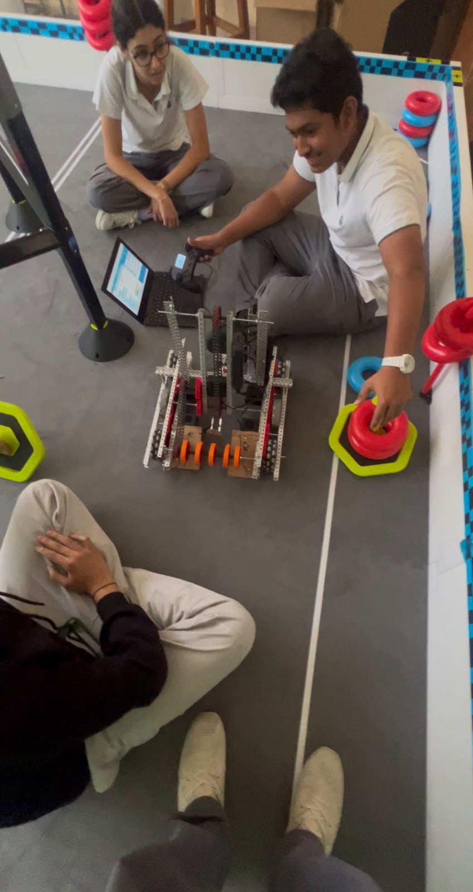

Mentoring through making
The work involved helping students turn an idea into a functioning robot, understand why a mechanism or program was failing, and test an improvement rather than guessing at a fix.
BUILD 11 / LEADERSHIP
Guiding younger students through robot design, coding, testing and competition preparation.
Read the case study
I mentored younger robotics students, including Grade 6 students, over two school years. I supported their design and build work, helped them troubleshoot setbacks and guided one team to a first-place STEAM result. A team I mentored also won the Create Award at the UAE National VEX Robotics Competition on 1 February 2026; the achievement certificate was issued in my name.
Explained robot design, construction and coding to younger students.
Helped teams test and troubleshoot their robots.
Guided students through setbacks and competition preparation.
The work involved helping students turn an idea into a functioning robot, understand why a mechanism or program was failing, and test an improvement rather than guessing at a fix.
PROJECT EVIDENCE
Photographs, diagrams and certificates from this project. Select an image to enlarge it without leaving the page.